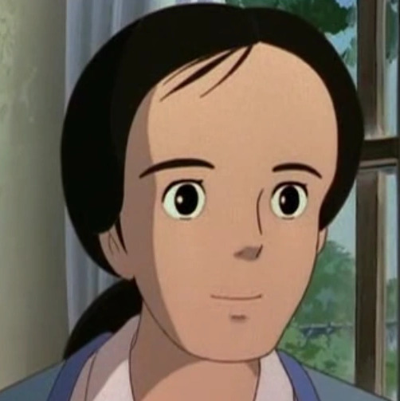

Yasuko Kusakabe

Nombre japonés: 草壁靖子 (Yasuko Kusakabe)
Especie: Humano
Edad: 29 años
Género: Femenino
Rol: Personaje de apoyo
Primera aparición: Mi vecino Totoro
Personalidad
No se ve mucho de ella, pero se muestra cariñosa, amable y amorosa. Parece una buena madre y realmente se preocupa por sus hijos.
Apariencia
Yasuko tiene ojos marrones y cabello castaño liso que generalmente está recogido en una cola de caballo baja. Solo se la ve con su bata de hospital en la película.